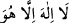
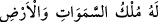

Bir hadiste şöyle buyrulur: “Bir mü’min başka bir mü’min için birbirini ayakta tutan
bir binâ gibidir.”[105] Yâni mü’min din ve dünya işlerinde ancak din kardeşinin yardımı
ile güç kuvvet kazanır. Aynen bir binânın bir bölümü öteki bölümleri sâyesinde ayakta
durduğu gibi. Yine bu hadiste günah olmayan işlerde birbirine omuz vermeye teşvik
vardır. Nitekim İbnü’l-Melek’in Şerhu’l-Meşârık’ında böyle geçmektedir.
Hz. Peygamber (s.a.) mescidde Hassân b. Sâbit (r.a.) için bir minber koyar, Hassân
da onun üzerine çıkarak Rasûlullah (s.a.)’i hicvedenleri hicveder, müslümanlara
yapılan sözlü sataşmalara cevaplar verir, onları müşriklere karşı desteklerdi. Kutsal
Ruh, yâni Cebrâil (a.s.) de bu cevapları vermede ona yardımcı olur, doğruları ilham
ederdi.[106]
Hiciv söylemek gerçi makbul değildir
Hiciv söylemeyi bilmeyen kimse buna kalkmasın
Hiciv söylemeyi bilmeyen şair şair değildir
Böylesi tırnağı ve dişi olmayan aslan gibidir
3- Tevhid üzere sebat etmek gerekir. Bu sebatın delillerinden biri de gizli veya sesli
olarak, ferd veya topluluk hâlinde tevhidi dil ile tekrarlamaktır. Bir hadiste “İmanınızı
yenileyin.”[107] buyrulmuştur. Bu ifâdenin maksadı, bir mertebeden başka bir mertebeye
intikal etmektir. Çünkü îmânın aslı, zâten önceden mevcuttur. Nitekim el-Vâkıâtü’l-
Mahmûdiyye’de böyle geçmektedir.
Molla Câmî (k.s.) şöyle der:
Gönlün Allah Teâlâ’yı gösteren bir aynadır
Senin aynanın yüzü neden bulanıktır?
O aynaya bir cila al, cila vur
Aynan aydınlık olsun
Eğer bilmezsen, onun cilası
La ilâhe illallah’dan başkası değildir
Bir hadiste şöyle buyrulmaktadır: “Allah’a eş koştuğu halde ölen ateşe girer.
Allah’tan başka hiçbir ilâh olmadığını bilerek ölen ise cennete girer.”[108]
Bilesin ki: “__WORD__, lâfza-i celâl gibi tam bir isimdir. Bu sebeple de sûfiler “Hû”
lâfzını bazı vakitler için vird edinmişlerdir.
Fethu’l-karîb’de şöyle der: “Allah isminin özelliklerinden biri de şudur: Bu
kelimenin yazılmış hâlinden her bir harfi sildiğinizde gerideki harfler yine Allah
Teâlâ’ya delâlet etmeye devam eder. Elifi sildiğiniz zaman “ __WORD__ ” kalır. Elifi bırakıp
birinci lâmı sildiğiniz zaman “__WORD__” kalır. İkisini de sildiğiniz zaman “__WORD__” (et-Tevbe 9/116) âyetinde olduğu gibi “ __WORD__ ” kalır. Üç harf